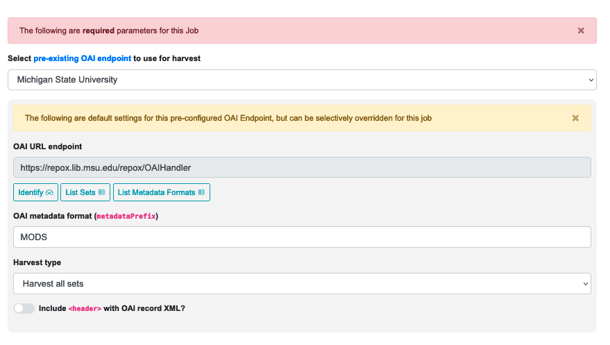
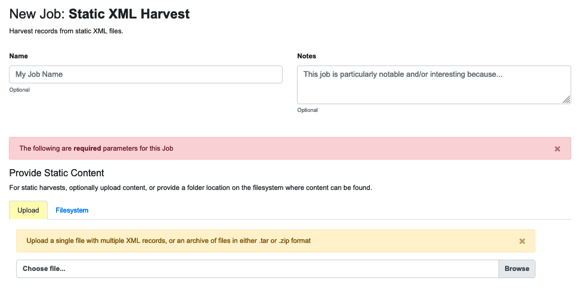
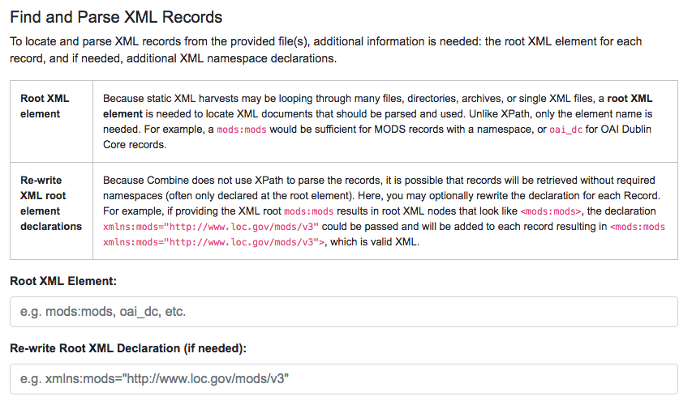

Harvesting is how Records are first introduced to Combine. Like all Jobs, Harvest Jobs are run from the a Record Group’s overview page.
This section covers how to run Harvest Jobs, building on the more general information in “Part 7: Running Jobs.” Currently, Combine supports the following types of harvests:
OAI-PMH harvesting in Combine uses the Apache Spark OAI harvester from the DPLA’s Ingestion 3 engine.
Before running an OAI harvest, you will need to configure an OAI Endpoint (see Part 6: Configuration) so you can harvest metadata from it. An endpoint only needs to be configured once.
When the endpoint is ready, go to a Record Group’s overview page and click the blue “Harvest OAI-PMH” button. You may need to scroll down the page to find the button. Once you click it, you will be taken to a “New Job” page.
On the New Job page, you first have the option of giving the Job a name and adding notes. Below that, indicated by a red alert bar, are the required parameters for an OAI Job.
The first of these is the pre-configured OAI endpoint. The following screenshot shows an OAI endpoint selected:
|  |
| A selected OAI endpoint and its related parameters |
The values for “OAI URL endpoint” and “OAI metadata format” are automatically populated from your configured endpoint, but you can override them, if necessary, for this specific harvest Job. Any changes made here will not be applied to future harvests.
The “Harvest type” field gives you four options. These are basically self-explanatory, but you should think carefully about which one will give you the specific results you’re looking for:
You also have the option of including the < header > with the OAI record XML.
Below this section you will find a gold alert bar for the ‘optional parameters’ that were explained in Part 7: Running Jobs, including “Validation Tests,” “Transform Identifier,” and “DPLA Bulk Data Compare.”
Once all of these configurations are set, you are ready to scroll to the bottom of the page and click the green “Run OAI Harvest Job” button to begin.
As an Harvest type Job, OAI harvests are responsible for creating a Record Identifier (record_id) for each Record. The record_id is pulled from the record/header/identifier field for each Record harvested.
As you continue on your metadata harvesting, transforming, and publishing journey, and you are thinking about how identifiers came to be, or might be changed, this is a good place to start from to see what the originating identifier was.
It is also possible to harvest Records from static sources, e.g. XML uploads. Combine uses Databricks Spark-XML to parse XML records from uploaded content, and the powerful globbing capabilities of Hadoop to locate XML files. Users may also provide a location on disk as opposed to uploading a file, but this is probably less commonly used. This documentation will focus on uploads.
For an ingest of Static XML, you begin on a Record Group’s overview page and click the blue “Harvest Static XML” button. You may need to scroll down the page to find the button. Once you click it, you will be taken to a “New Job” page.
On the New Job page, you first have the option of giving the Job a name and adding notes.
Below that, indicated by a red alert bar, are the required parameters for a Static XML Job.
As noted above, you have the option of providing a location on a disk, but the more common workflow is to upload the file to Combine. The tab for doing that looks like this:
|  |
| Required parameters for a static XML upload |
Using the Spark-XML library provides an efficient and powerful way of locating and parsing XML records, but it does so in a way that might be unfamiliar at first. Instead of providing XPath expressions for locating Records, only the XML Record’s root element is required, and the Records are located as raw strings.
For example, consider the following MODS record:
< mods:mods >
|
This record would only need the following Root XML element string to be found: mods:mods. No angle brackets, no XPath expressions, just the element name!
However, a close inspection reveals this MODS example record does not have the required namespace declaration, xmlns:mods="http://www.loc.gov/mods/v3". It’s possible this was declared in a different part of the XML Record. Because Spark-XML locates XML records more as strings, as opposed to parsed documents, Combine also allows users to identify an XML root element declaration to use for each found Record. For example:
xmlns:mods="http://www.loc.gov/mods/v3"
|
Using this declaration would create the following valid XML Record in Combine:
< mods:mods xmlns:mods="http://www.loc.gov/mods/v3" >
< mods:titleInfo >
< mods:title >Amazing Record of Incalculable Worth< /mods:title >
< /mods:titleInfo >
...
...
< /mods:mods >
Next on the page are the rest of the required configurations. For convenience the New Job page includes tables that provide brief explanations for how to use them:
|  |
| Fields for providing root XML information |
|
| Field for providing an optional XPath for retrieving an identifier |
The workflow for Static XML is different from the one for OAI Harvesting, and that may prompt some questions:
Will re-writing the root XML declaration alter the XML records that I am ingesting into Combine?
The short answer is, yes. But, it’s important to remember that XML files are often altered in some way when parsed and re-serialized. Their integrity doesn’t lie in having a character-by-character similarity but in the data that are parsed. This approach only alters the declarations in the root XML element.
Uploads to Combine that already include namespaces, and all required declarations at the level of each individual Record, do not require this re-writing, and they will leave the XML untouched.
What kind of files and/or structures can be uploaded?
Quite a few! Static harvests will scour what is uploaded – a single XML file; multiple files within a zipped or tarred archive file; even recursive directories in an archive file – to find the root XML element (e.g. mods:mods), parsing each one it encounters.
Examples include:
Identifiers for Static harvesting
For static harvests, identifiers can be created in one of two ways:
Below this section you will find a gold alert bar, and beneath that will be the ‘optional parameters’ that were explained in Part 7: Running Jobs, including “Validation Tests,” “Transform Identifier,” and “DPLA Bulk Data Compare.”
Once all of these configurations are set, you are ready to scroll to the bottom of the page and click the green “Run Static Harvest Job” button to begin the harvest.
Spreadsheet data can not be directly harvested into Combine. Instead, a three-step process can be used to translate an Excel spreadsheet into a MODS xml file that can be statically harvested as described in the above section. The resources used to do this can be downloaded from github here.
Briefly the steps are:
Step 1: Preparing A Preconfigured Spreadsheet
We provide an Excel spreadsheet that contains defined headers based on Dublin Core fields. This spreadsheet has multiple tabs and each tab will become a Dublin Core xml file in the next step. Transfer your existing tabular data into the provided spreadsheet, taking care to match the data types with the column headings.
Step 2: Use the provided reaper.rb ruby program to generate XML
In this step, we use a provided ruby program, called “reaper” to translate the spreadsheet tabs prepared in step 1 into Dublin Core xml file(s). Reaper requires ruby version 3 or newer to run properly. The code also requires two gems to be installed: ‘optparse’ and ‘xsv’. It uses a unix like syntax where the ‘-f’ flag indicates the next item is the Excel file to process.
ruby reaper.rb -f dc_data.xlsx
Ruby reaper.rb -h
Step 3: Use the provided xslt file to transform the Dublin Core xml file into MODS xml file that can be harvested into Combine.
At this point you should have one or more Dublin Core xml files as a result of step two. The final step is to transform these into MODS xml using the provided xslt file called, nnnn.xsl. There are various ways to do this, we used the Oxygen XML Editor to apply the xsl to the Dublin Core xml.
At this point the resulting MODS xml file(s) can be imported into Combine.
Next: Transforming Records